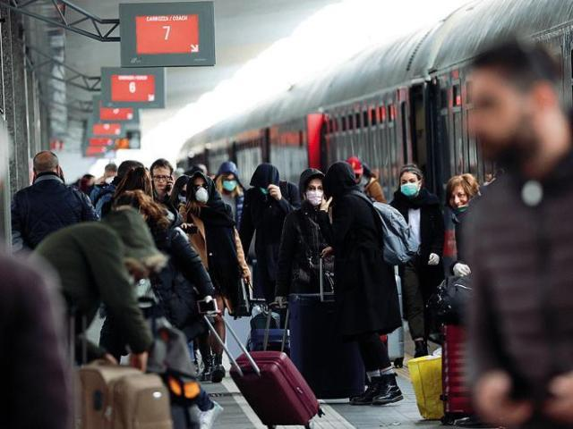
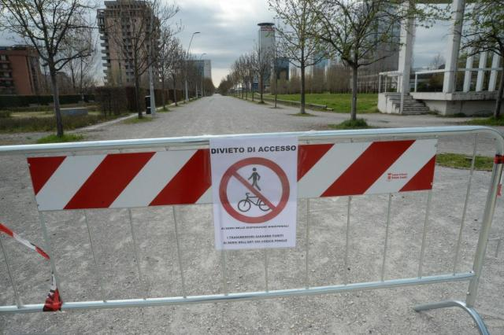
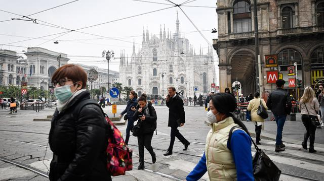

别信网络谣言了，真实的意大利防疫是这样的
原文链接 备份链接 本 文 约 3700 字 阅 读 需 要 8 min 在本文的开头，首先有必要让读者明白，作者的讲述绝非完全可信。 我在意大利住了十多年，又是媒体记者，这次意大利疫情爆发以后，很多媒体都来找我，甚至有人愿意出丰厚的稿 …
体坛周报全媒体驻意大利记者 陈硕麟
新冠疫情下，医疗能力在世界范围内本是顶尖水平的意大利却成为了重灾区，在这个过程中，意大利究竟犯了哪些错误？

1.疫情前期排查有漏洞，延误大量时间
“1号病人”2月21号确诊时，已经出现症状一个星期，而意大利学者经过研究发现，“1号病人”的感染源其实来自德国。但意大利前期将主要的精力放在检查和中国有关的航班及往来人员上，并没有意识到爆发的源头可能来自欧盟内部，而病毒开始传播的时间也要比他们之前预计得更早。
2.傲慢和偏见
意大利其实亲眼见证了中国的疫情是如何爆发，又如何迅速做出各种有效的应对措施，将疫情扼制住。但意大利人对于自己的医疗体系颇为自信，认为就算新冠疫情有一天到来，他们发达的医疗体系也可以自如应付。更有一些意大利专家声称新冠本身只是“大号流感”，民众无需恐慌。
很多意大利人之前还认为，中国疫情严重，是因为医疗水平不够，卫生条件也不好，在发达国家这样的情况不会发生，事实最后给了他们重重一击。甚至很多医护人员都在一开始缺乏防护的情况下被迅速感染，进一步削弱了意大利的医疗实力。
3.控制措施不果断
虽然在2月21号确诊人数突然增多之后，孔特政府就迅速将12个出现疫情的市镇封锁，但此后大半个月时间内，封锁范围一直保持不变，红色封锁区外的居民依然照常生活，没有任何变化，待到3月上旬将红色区域扩展到伦巴第大区和周围的一些行省时，病毒早已在中部和北部不少地区形成了社区传播。

4.封锁措施不严格，不果决
意大利前期的封锁措施更多将精力集中在限制疫区内外的人员往来，并没有控制疫区内部人员出行，像餐厅、酒吧这样的公共场合，在很长一段时间内依然保持营业，加快了社区传播。也有一些人甚至还能在封锁下离开疫区，外出同自己的朋友碰面、滑雪、参加各种无关紧要的活动。哪怕在全国封锁令已经执行了将近半个月左右的节点，警察依然能查到大量的意大利人外出游荡，且并没有任何必要的动机。直到前几天，孔特政府才出台了更严格的管制令。

5.部分政客起到了负面宣传作用
2月底意大利新增病例开始迅速增多，博物馆、电影院等公共场所在当时曾被要求关闭，但在部分地区，比如佛罗伦萨和克雷莫纳，一些政客呼吁日常的工作生活不能被病毒暂停，一度以减少民众恐慌的名义，重新将这些地方开启，为病毒的传播提供了契机。
6.很多意大利民众也对疫情的严重程度缺乏认知
上世纪初叶的西班牙大流感之后，意大利第一次遇到这么严重的疫情，也就是说绝大多数人第一次遇到那么严重的疫情。他们之前对本国医疗系统的了解，停留在对日常疾病的预防和处理上，意大利优秀的公共医疗体系也相当于“麻痹”了他们的认知。在疫情之下原先的医疗体系会受到怎样的冲击，大部分人并不清楚。这也造成了很多意大利人在疫情已经相当严重的情况下依然和家人、朋友聚会，仍然在公共场合娱乐，提升了感染风险，随后进一步造成本可以避免的医疗资源挤兑，早在2月底，部分地区的医院床位就已经告急。
原文链接 备份链接 本 文 约 3700 字 阅 读 需 要 8 min 在本文的开头，首先有必要让读者明白，作者的讲述绝非完全可信。 我在意大利住了十多年，又是媒体记者，这次意大利疫情爆发以后，很多媒体都来找我，甚至有人愿意出丰厚的稿 …
原文链接 备份链接 澎湃新闻记者 南博一 为遏制新冠病毒的传播，3月8日，意大利封锁了该国北部的伦巴第大区和11个邻近省份，1600万人的自由流动受到影响，封锁将一直持续到4月3日。 “我们面临着一个紧急情况，一个全国性的紧急情况，” …
原文链接 备份链接 作为一个科学大国，英国是如何应对新冠疫情的？他们是否能走出一条和中国不同、社会成本更低而行之有效的防疫之路？为此我们采访了流行病学专家、牛津大学终身教授陈铮鸣。 英国于 1 月底确诊第一位来自中国的输入性新冠患者。截 …
原文链接 备份链接 *************▲*************春天来了，学校门前的路却空空荡荡。 （沉白白/图） 全文共4034字，阅读大约需要7分钟。 威尼托大区本周关闭了学校，却没有要求大家在家隔离。看着窗外三三两两去踢 …
原文链接 备份链接 一开始意大利人觉得病毒来自中国，害怕中国人 现在意大利人病例多了，华人反过来怕意大利人 2月25日，意大利总理孔特在民防部主持防疫工作会议。图片来源：意大利总理府官网 意大利伦巴第大区首府米兰以南约70公里，圣菲奥拉诺 …